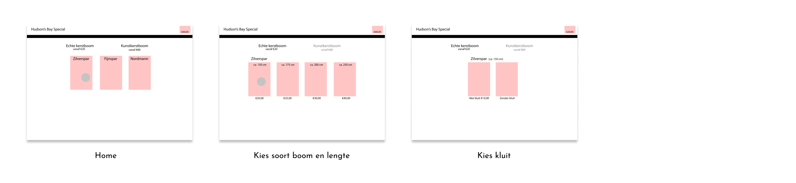
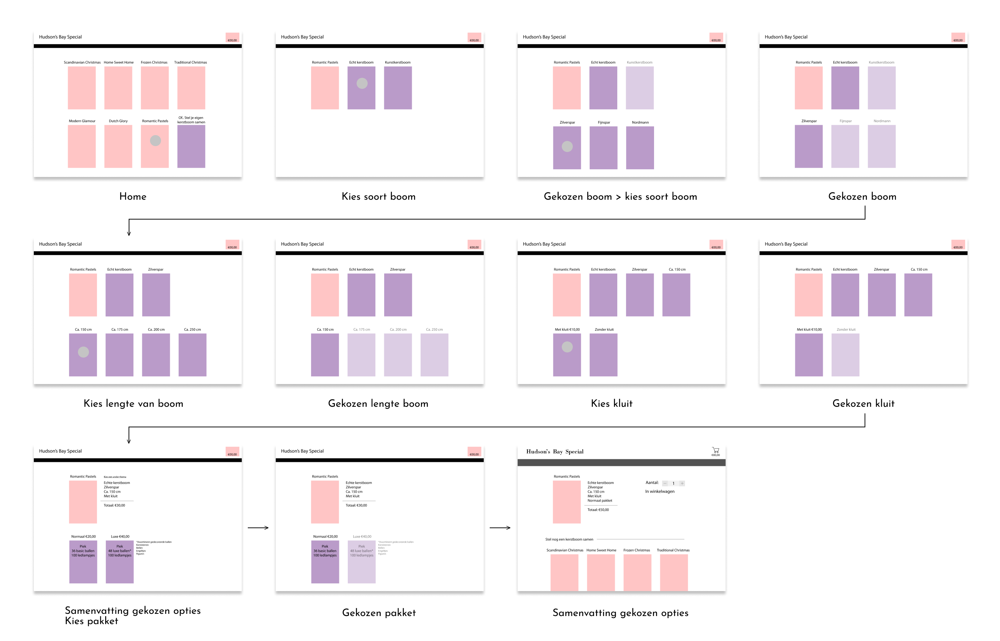
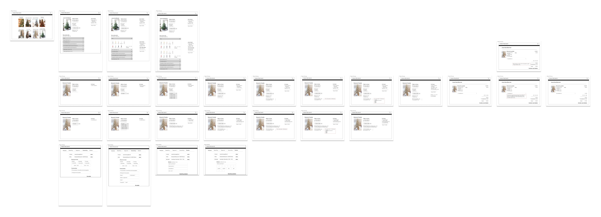

Christmas tree special
The Christmas tree special was a big assignment. I received a document with all the requirements and options a user can choose for his or her christmas tree to customize. The goal of this project was to turn the document into a visual webdesign with Human Computer Interaction principles.
UX/UI Designer
User research, Concepting
Designs
How to start visually was a struggle for me, but trying different things and mix them up with feedback helped me alot.
Version 1.0
Version 1.1
Version 2.0
A whole new different concept and micro interactions than my first design, because this was more logical for a user and HCI principles. I also added realistic pictures to visualize it more real.
Final design
This final version includes every micro interaction of ordering a christmas tree. I also decided to illustrate christmas trees myself instead of using random pictures, because it helps the micro interactions and the design.